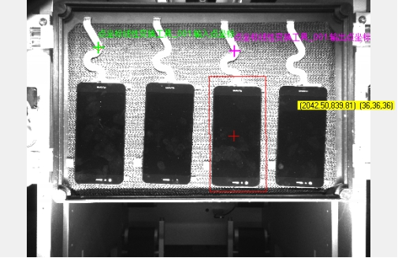

点坐标线性变换工具是用来对某个点单独做线性变换使用的，例如某个点单独根据几何定位的结果进行移动和旋转，如图1所示。点坐标线性变换工具的初始位置为绿色十字，经过线性变换之后的结果为紫色十字。几何定位工具模版用的是最左边的手机屏幕，由于点坐标线性变换工具输入的二维线性变换是几何定位工具的结果，因此点坐标变换工具的输出结果会跟随几何定位结果移动。

| 分类 | 参数名称 | 参数描述 |
|---|---|---|
| 属性窗口 | 无 | 无 |
| 图像窗口 | 输入图像 | 输入图像。 |
| 数据链 | 输入点坐标 | 需要进行线性变换的点坐标。 |
| 输入图像 | 输入图像。 | |
| 二维线性变换 | 输出点相对于输入点的平移、旋转。 | |
| 高级界面 | 无 | 无 |
| 分类 | 参数名称 | 参数描述 |
|---|---|---|
| 监视窗口 | 输出点坐标 | 经过二维线性变换之后的点坐标。 |
| 执行结果 | 工具执行结果。 | |
| 执行时间 | 工具执行时间。 | |
| 图像窗口 | 输出点坐标 | 显示经过二维线性变换之后的点。 |
| 执行结果 | 显示工具执行结果，执行成功显示“OK”，执行失败显示“NG”，同监视窗口的执行结果参数。 | |
| 数据链 | 无 | 无 |
无
无
参见“\Samples\点坐标线性变换工具.gvp”。
工程说明：
工程演示的是点坐标利用点坐标线性变换工具跟随几何定位结果变动的示例。点坐标线性变换工具的输入点坐标是从变量定义，由二维向量生成工具生成的。点坐标线性变换结果显示在“View-1”视图里面，循环里面增加了延时工具是为了方便在视图里查看结果，延长显示时间。